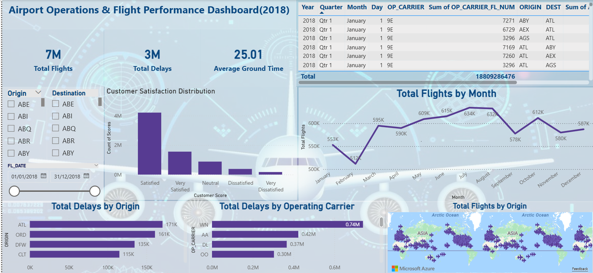
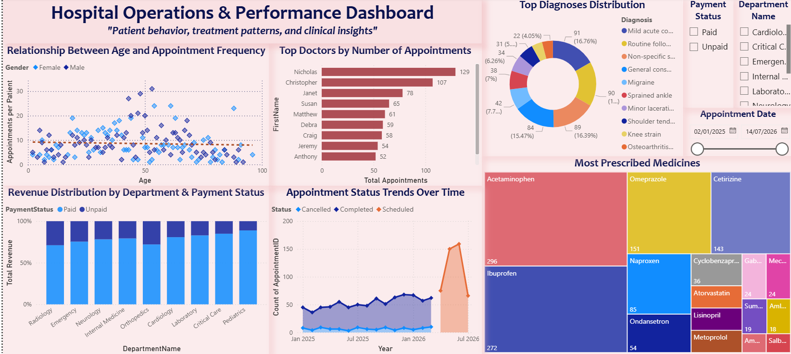

Hypertension Risk Prediction Using Machine Learning
Machine learning project using Canadian Community Health Survey data to predict hypertension risk using socioeconomic and behavioural factors.
Data Analytics| Business Intelligence | Machine Learning
Experience in Power BI, SQL, Python, Machine learning, Data visualization, Excel and Cloud technologies focused on solving real world analytics projects and business problems.

Machine learning project using Canadian Community Health Survey data to predict hypertension risk using socioeconomic and behavioural factors.

Built a Business Intelligence dashboard in Power BI to analyze academic, family, and lifestyle factors affecting student performance using data transformation, 3NF modeling, DAX measures, and interactive visualizations.

Interactive Power BI dashboard analyzing airport operations, delays, and passenger feedback using KPI reporting, drill down analysis, DAX, and operational data visualization.

Designed and implemented a normalized hospital database system using SQL Server and developed an interactive Power BI dashboard to analyze appointments, revenue, patient activity, diagnoses, prescriptions, and operational performance using synthetic healthcare data.

SQL Server project demonstrating relational database design, joins, aggregation, and reporting style analysis using a college registration database.

Excel data transformation project using VLOOKUP, nested formulas, and summary analysis to join U.S. census block group data with state, county, geographic, and demographic attributes.
Business Intelligence Systems Infrastructure
Algonquin College, Ottawa
Expected Graduation: August 2026
Bacgelor of Management Information System
Kabul University, Kabul, Afghanistan
Graduated: December 2019